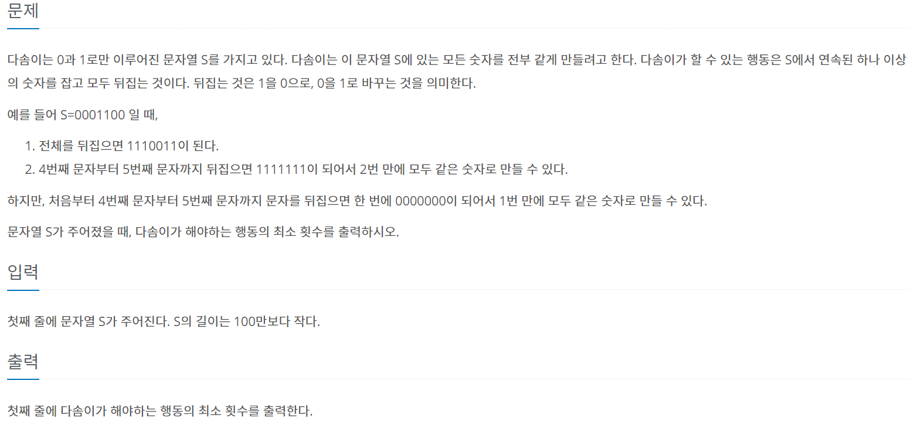
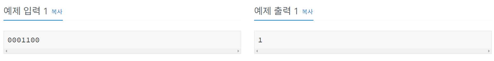
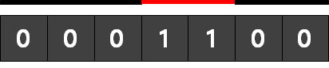
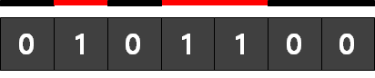

#문제정보
출처 : www.acmicpc.net/problem/1439
 
#문제분석
사용된 알고리즘 : 그리디(GREEDY)
간단한 문제이다. 0이 나오는 영역과 1이 나오는 영역을 비교하여, 더 작은 영역을 출력하면 된다.
0001100이 입력되었다고 가정해 보면 0의 영역 = 2 , 1의 영역 = 1 이므로 1의 영역을 출력한다.

01001100이 입력되었다고 가정해 보면 0의 영역 = 3 , 1의 영역 = 2 이므로 1의 영역을 출력한다.

단, 조심해야 할 부분은
if (numstr[i] != numstr[i+1])
{
if (numstr[i] == '0') zeroarea++;
else onearea++;
}if (문자열[i] != 문자열[i+1]) 조건문 부분인데, i번째 인덱스와 i+1번째 인덱스가 다른 경우에만 카운트를 해야한다는 것만 조심하면 된다.
#소스코드
#include <iostream>
#include <string>
#include <algorithm>
using namespace std;
int zeroarea;
int onearea;
int main()
{
string numstr;
cin >> numstr;
for (int i = 0 ; i < numstr.size() ; ++i)
{
if (numstr[i] != numstr[i+1])
{
if (numstr[i] == '0') zeroarea++;
else onearea++;
}
}
cout << min(zeroarea,onearea);
return 0;
}